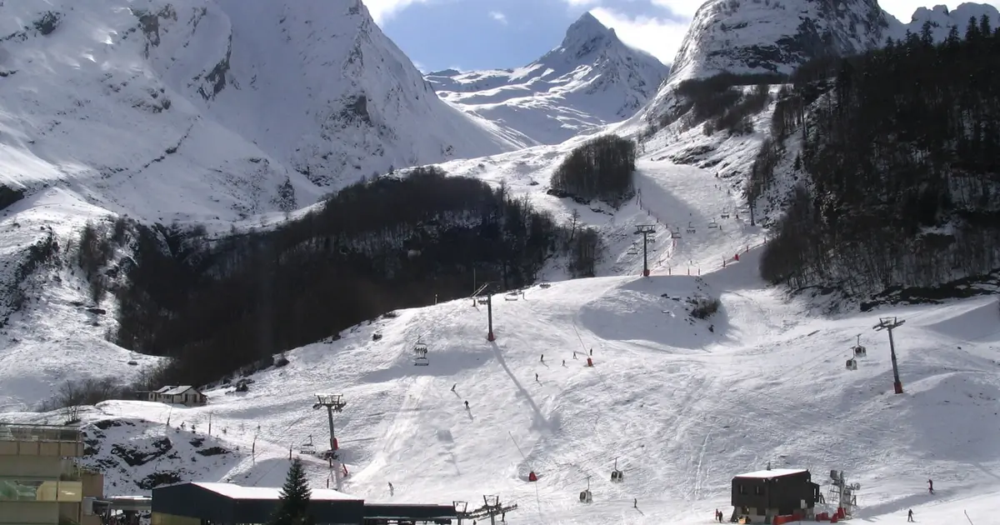

Vale la pena rischiare Cauterets per una settimana bianca a dicembre?
Cauterets è una scelta allettante per un viaggio economico, ma la neve a inizio dicembre è spesso scarsa. Se vuoi le condizioni migliori, la nostra storia mostra che dovresti aspettare l'ultima settimana del mese. Anche se i prezzi sono bassi, scommetti sulla copertura naturale nei Pirenei francesi.
Le previsioni neve in tempo reale per Cauterets nell'app SnowScopeAltezza neve, allerte powder e mappa 3D, gratis.Prima la risposta onesta
Cauterets è un comprensorio piccolo e facile: l'area mappata ha 25 km di piste e 9 impianti, con 695 m di dislivello. Uno sciatore esperto che vuole piste nuove ogni giorno lo conosce in fretta, ma è un posto tranquillo per ritrovare le gambe.
La cosa più importante da sapere è che l'impianto più basso parte a 1.725 m. È piuttosto alto per i Pirenei, il che aiuta quando il tempo è caldo. Tuttavia, la profondità abituale di dicembre a questa altezza di base è di soli 23 cm. In un inverno scarso, come nel 1989-90, quella profondità può scendere fino a 2 cm, rendendo impossibile sciare a valle.

Inizio vs fine dicembre in numeri
Il momento del tuo viaggio cambia tutto a Cauterets. Nella prima settimana, dal 1 al 7 dicembre, la base a 1.725 m ha 30 cm di neve solo nel 28 % degli inverni passati. Se vai durante la settimana dal 15 al 21 dicembre, quella possibilità rimane al 37 %. È un'attesa nervosa per l'arrivo della neve.
I numeri sembrano molto migliori se prenoti per la fine del mese. Dal 22 al 28 dicembre, la possibilità di avere 30 cm o più alla base sale al 54 %. In cima agli impianti, che raggiungono i 2.420 m, la possibilità di 30 cm di copertura è del 72 % durante quella stessa ultima settimana. La profondità abituale il 15 dicembre in cima è di 34 cm, quindi più in alto rimani, più sicuro sarà il tuo viaggio.
Quanto costa lo skipass
Una cosa che non è cambiata è che Cauterets rimane molto conveniente per una vacanza invernale. Un pass giornaliero per adulti costa 46 EUR, un prezzo equo per 25 km di piste mappate. Se rimani per una settimana intera, il pass per adulti di 6 giorni costa 276 EUR. Questi prezzi rendono molto più facile tornare allo sport senza spendere una fortuna.
Oggi è il 13 novembre 2026 e la montagna sta aspettando l'inverno. Ci sono 0 cm di neve alla base e alle altezze medie. Anche la cima degli impianti a 2.420 m ha 0 cm, ma le previsioni mostrano 8 cm di neve fresca nei prossimi 7 giorni. Tra il 13 novembre e il 26 novembre, le prospettive a due settimane per la parte centrale e superiore mostrano un range da 9 cm a 39 cm, quindi la stagione sta appena iniziando a svegliarsi.
Cauterets o Grand Tourmalet
Quando confronti Cauterets con Grand Tourmalet, devi scegliere tra dimensioni e altezza. Grand Tourmalet è molto più grande con 54 km di piste e 29 impianti. Costa anche di più, con un pass giornaliero per adulti a 55 EUR e un pass di 6 giorni a 294 EUR. Tuttavia, più grande non è sempre meglio in un normale dicembre.
L'impianto più basso a Grand Tourmalet è a 1.459 m, molto più basso della base di 1.725 m a Cauterets. Per questo motivo, la profondità abituale di dicembre alla base di Grand Tourmalet è di soli 15 cm. Anche in cima, Cauterets di solito ha più neve, con 42 cm rispetto ai 36 cm in cima al Grand Tourmalet. Per un viaggio a dicembre, la base più alta a Cauterets è una scommessa più sicura.
Dicembre è peggiorato?
La nostra storia della neve di 46 inverni passati mostra una tendenza chiara che non possiamo ignorare. Nei primi 15 inverni dal 1980-81 al 1994-95, la metà della montagna a 2.072 m aveva una media di dicembre di 35 cm. Negli ultimi 15 inverni dal 2011-12 al 2025-26, quella media è scesa a 23 cm.
L'inverno scorso, nel 2025-26, la media di dicembre alla base era di soli 17 cm. Anche se il picco stagionale abituale in cima può raggiungere 180 cm, di solito accade molto più tardi di dicembre. In un inverno normale, la prima neve duratura arriva in cima il 1° novembre e alla base il 4 novembre. È un inizio lento, quindi essere onesti con i numeri è l'unico modo per pianificare un buon viaggio.
Consigli per sciatori
- Prenota il tuo viaggio per la settimana del 22-28 dicembre quando la possibilità di 50 cm in cima è del 59 %.
- Rimani sulle piste vicino alla cima degli impianti a 2.420 m dove la neve è solitamente profonda 42 cm a dicembre.
- Scegli Cauterets rispetto a Grand Tourmalet se vuoi un pass giornaliero più economico a 46 EUR e un'area di base più alta.
- Controlla il bollettino valanghe prima di pensare di lasciare i 25 km di piste mappate.
- Cerca il pass di 6 giorni a 276 EUR sul sito ufficiale per mantenere il tuo viaggio a basso costo.
Altre mappe (siti esterni)
Riferimenti e crediti
- N'PY, Cauterets official ski pass prices 2026-27 www.n-py.com/fr/cauterets/forfaits-ski
- N'PY, Grand Tourmalet official ski pass prices 2026-27 www.n-py.com/fr/grand-tourmalet/forfaits-ski
- SnowScope, December snow at three heights and today's snow map snowscope.app/
Su questi numeri
Numeri della neve: storico neve SnowScope, 46 inverni passati (1980-81 - 2025-26) a tre quote di ogni località (un modello del passato corretto per la quota: una stima per un'area, non misure della località); dati di dicembre calcolati dalle altezze giornaliere di quegli inverni. Neve attuale e tendenza a due settimane: previsioni SnowScope (tendenza da ECMWF e GFS, un intervallo, non una promessa). Impianti e piste: mappatura OpenSkiMap. Prezzi: le pagine ufficiali qui sotto, lette il 2026-11-13; i prezzi possono cambiare, verificare prima di prenotare.
Bollettini valanghe ufficiali: Météo-France – Bulletin d'estimation du risque d'avalanche
Cita questo articolo
Per ricerca, didattica o stampa: numeri e grafici sono liberamente riutilizzabili con licenza CC BY 4.0 citando così.
SnowScope (2026), Vale la pena rischiare Cauterets per una settimana bianca a dicembre?, https://snowscope.app/blog/it/2026/11/cauterets-december-ski-honest-snow-odds-2026.html, consultato il 2026-11-14
SnowScope (Atlas Labs). (2026, November 14). Vale la pena rischiare Cauterets per una settimana bianca a dicembre?. SnowScope snow reports. https://snowscope.app/blog/it/2026/11/cauterets-december-ski-honest-snow-odds-2026.html
BibTeX
@misc{snowscope2026cauteretsdecemberskihone,
author = {{SnowScope (Atlas Labs)}},
title = {Vale la pena rischiare Cauterets per una settimana bianca a dicembre?},
year = {2026},
month = nov,
howpublished = {\url{https://snowscope.app/blog/it/2026/11/cauterets-december-ski-honest-snow-odds-2026.html}},
note = {Published 2026-11-14 17:41 UTC; accessed 2026-11-14}
}· CC BY 4.0 · Metodi, dati e strumenti →
Cauterets: neve e temperatura per quota, quest'inverno vs lo scorso (strumenti) →
Segui Cauterets
Gratis: un messaggio quando arriva la neve e il meteo ogni mattina.
Altri bollettini neve

C'è più neve di un anno fa? Abbiamo confrontato oggi con il 11 novembre dell'inverno scorso in 4 località sui Pirenei: 0 hanno più neve ora, secondo …

Gourette e Cauterets a confronto: quote, neve abituale per mese, settimane migliori e come arrivare, da 46 inverni passati.

Leggi la neve sui Pirenei di oggi e ottieni neve fresca polverosa, neve sottile di inizio stagione e aria mite che può lasciare una crosta. Ecco …